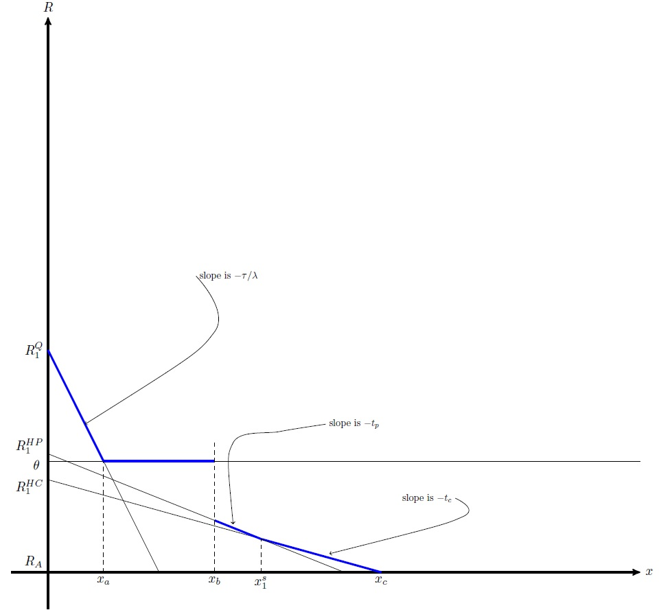
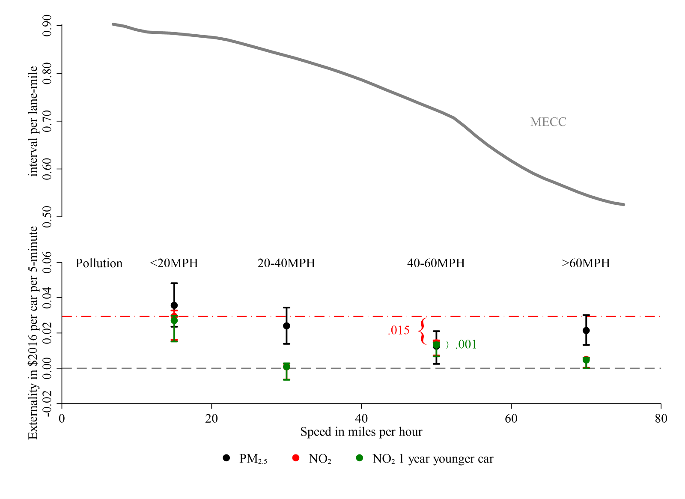

Research
Publications Link to heading
Efficiency and Equity Impacts of Urban Transportation Policies with Equilibrium Sorting - Accepted at American Economic Review Link to heading

(with Shanjun Li, Panle Barwick, Jing Wu & Tianli Xia)
Abstract
We estimate an equilibrium sorting model of housing location and commuting mode choice with endogenous traffic congestion to evaluate urban transportation policies. Leveraging fine-scale data from travel diaries and housing transactions identifying residents’ home and work locations, we recover rich preference heterogeneity over both travel mode and residential location decisions. While different policies produce the same congestion reduction, their impacts on social welfare differ drastically. In addition, sorting undermines the congestion reduction under driving restrictions and subway expansion but strengthens it under congestion pricing. The combination of congestion pricing and subway expansion delivers the greatest congestion relief and efficiency gains.
Avoiding Traffic Congestion Externalities? The Value of Urgency - Accepted at Journal of Political Economy Microeconomics Link to heading

(with Antonio Bento and Kevin Roth)
Abstract
Taking advantage of repeated appearances of drivers in Los Angeles’s ExpressLanes under varied traffic conditions, we uncover the distribution of individuals’ preferences for time savings in a novel application of a hedonic pricing model. In this setting, we introduce the concept of the value of urgency, defined by a component of willingness to pay to enter tolled lanes to avoid a congested alternative route. The value of urgency does not scale in the amount of time saved, reflecting discrete penalties for late arrival. We show that this value accounts for 87% of total willingness to pay to use the ExpressLanes, while the contributions to WTP from other widely used valuation measures, such as the values of time and reliability, are negligible. We suggest that quality-of-service pricing that varies in real time and removes uncertainty over travel times creates new markets for individuals to avoid lateness and reveal their preferences for urgency.
Leveraging scale economies and policy incentives: Carbon capture, utilization & storage in Gulf clusters at Energy Policy (2021) Link to heading
(with Sean Corcoran, Andrew Robison, Ben Leibowicz, and Sheila Olmstead)
Abstract
Carbon capture, utilization and storage (CCUS) represents a set of technologies essential to meeting ambitious mid-to late-century decarbonization goals. Yet deployment of CCUS has been slow, with fewer than 20 large-scale facilities operating worldwide in 2019. We estimate the total and marginal cost of constructing and operating new CCUS facilities and associated infrastructure to reduce carbon dioxide (CO2) emissions from current and planned industrial facilities on the Texas and Louisiana Gulf Coast. We compare these cost estimates to scheduled CCUS tax incentives through 2026 under section 45Q of the U.S. Internal Revenue Code to quantify cost-effective emissions abatement. Our analysis measures the cost-reducing potential of economies of scale in regional CO2 pipeline networks. We also compare CCUS costs to one measure of the benefits of carbon capture, the social cost of carbon. Results suggest that U.S. federal tax incentives currently in place through 2026 could justify between 3.3 million and 77.6 million tons of annual CCUS in the Gulf region, depending on the choice of storage technology and the degree of pipeline network coordination. Finally, we highlight several potential policy barriers that may explain low adoption of CCUS in the Gulf Region and elsewhere.
Tightening Belts to Buy a Home: Consumption Responses to Rising Housing Prices in Urban China at Journal of Urban Economics (2020)  Link to heading
Link to heading
ungated version
(with Shanjun Li, Panle Barwick, Yuanning Liang, and Meng Zhao)
Abstract
This paper measures the impact of housing price changes on household consumption at the city level using the universe of credit and debit card transactions in China from 2011 to 2013. In sharp contrast to the literature on the U.S. housing market, our analysis shows a large and negative housing price elasticity of consumption: a 10% increase in housing prices would lead to a 9.1% reduction in non-housing spending. We argue that the negative elasticity is driven by the combination of a strong investment incentive in housing and heavy borrowing constraints faced by households. This is corroborated by the finding that households increase their savings as housing prices increase. Relative to the existing literature, our analysis helps to better explain how low- and middle-income households adapt to the limited investment venues and surging housing prices in the
Emissions in the Stream: Estimating the Greenhouse Gas Impacts of an Oil and Gas Boom at Environmental Research Letters (2020) Link to heading

(with Achmad Khomaini, Benjamin Leibowicz and Sheila Olmstead)
Media: Reuters, Bloomberg, CNBC, Business Insider, Houston Chronicle, S&P Global, E&E News, AXIOS, Nasdaq, Scientific American, Texas Observer
Abstract
We compile a detailed inventory of projected upstream oil and gas production expansions as well as recently and soon-to-be built midstream and downstream facilities within the region. Using data from emissions permits, emissions factors, and facility capacities, we estimate expected GHG emissions at the facility level for facilities that have recently been constructed or are soon to be constructed. Our central estimate suggests that the total annual emissions impact of the regional oil and gas infrastructure buildout may reach 541 million tons of CO2 equivalent (CO2e) by 2030, which is more than 8% of total US GHG emissions in 2017 and roughly equivalent to the emissions of 131 coal-fired power plants. Researchers have largely focused on upstream emissions such as fugitive methane (CH4) associated with new US production; our findings reveal the potentially greater prominence of midstream and downstream sources in the studied region.
Working Papers Link to heading
What are the likely air pollution impacts of carbon capture and storage?  Revise and Resubmit at Journal of Association of Environmental & Resource Economists
Link to heading
Revise and Resubmit at Journal of Association of Environmental & Resource Economists
Link to heading
(with HR Huber Rodriguez & Sheila Olmstead)
Abstract
Because fossil fuels currently account for 60% of U.S. power generation and an even larger share of industrial energy use, a key component of many net-zero carbon plans is the expansion of carbon capture, utilization and storage (CCUS) through tax credits and other incentives. We quantify the potential impacts of CCUS on local air pollution, focusing on the U.S. Gulf region, given a large agglomeration of carbon-intensive industrial facilities and significant CCUS deployment underway. We characterize pre-CCUS local air pollution emissions from fossil-fuel electricity generation and large industrial carbon emitters (e.g., petrochemicals, refining) and compare these with projected post-CCUS local air pollution emissions, leveraging emission factor estimates from the engineering literature. We then analyze net emissions impacts on secondary particulate matter formation and damages via the AP3 integrated air pollution assessment model (Clay, et al. 2019). An important, though under-emphasized aspect of the emissions impact of CCUS is increased ammonia emissions from CCUS technology, which we show can lead to net air pollution damages from CCUS from natural gas power plants and most industrial facilities. These damages partially counterbalance the substantial climate benefits of CCUS adoption. Because facility-level impacts are highly variable, our results highlight potential environmental justice challenges from CCUS deployment. We find that deleterious local air pollution impacts of CCUS are correlated with prior air pollution exposure at both the county and census tract levels, suggesting that CCUS may pose significant tradeoffs between global climate benefits and costs to local communities.
Paying at the Pump and the Ballot Box: Electoral Penalties of Motor Fuels Taxes  Link to heading
Link to heading
(with Matias Navarro-Sudy & Gian-Claudia Sciara) Under Review
Abstract
Perhaps the greatest challenge to addressing climate change comprehensively through government policy in the US has been limited political feasibility. We investigate whether politicians are punished by voters for increasing motor fuel taxes by compiling a comprehensive dataset on state legislative election outcomes and gasoline taxes. Leveraging a difference-in-discontinuities research design, we estimate the effect of legislated gasoline tax changes on incumbent state legislators’ subsequent electoral outcomes. For very close elections, we show how the incumbency advantage attenuates when gasoline tax increases have been legislated in the intervening legislative session. Specifically, we find a small, but economically and statistically meaningful decrease in the incumbency advantage of 1.3 to 1.9 percentage points for Republican and Democratic incumbents, respectively. This penalty represents 14-21% of the overall electoral advantage of incumbents in our sample, which highlights the relative importance of environmental and energy taxes in voter priorities.
They Paved Paradise? A Dynamic Model of Rational Commercial Investment and Urban Parking and Congestion  Link to heading
(with Sofia Franco) Under Review
Abstract
In this paper, we explore the causes and consequences of vacant land in urban areas and its implication for optimal land use policy. We develop a dynamic, monocentric urban model to show cases where vacant land can be optimal and suboptimal depending upon economic and regulatory conditions as well as externalities. We show in numerical simulations how the structure of the urban economy responds to different policies and consider their implications for different types of cities. These results have important implications for cities concerned about the impacts of vacant land.
Local Pollution Externalities from Driving: Evidence from Roadway Vehicle Sensors  Link to heading
(with Antonio M. Bento, Ruozi Song & Rajat Kochhar) Under Review
Abstract
This paper seeks to understand the localized effect of automobile congestion on air pollution. We leverage air pollution sensors on Google Street View cars combined with fine grain speed and vehicle density observations on Los Angeles Highways, to understand this effect at level of granularity never previously considered using causally identified methods. We show that higher pollution occurs at very low and very high speeds due to lowered engine efficiency. Given the success to date of reducing pollution via tailpipe emission standards, we show that the magnitude of our effects points to the need to focus more attention by policymakers on vehicle speeds for further mitigation of health impacts from vehicle emissions. Our results have important implications for understanding human health effects of anti-congestion policies, speed limits and point to a need to better regulate sources of fine particulate matter pollution from tires and brakes.
The Long Road to Work: Divergent Effects of Transportation Policies by Worker Skill in a Locational Sorting Model Link to heading
Abstract
This paper examines the effect of transportation policies directed at reducing travel times for commuting on inequality in urban labor markets. I consider the choice of city of residence by workers with and without a college degree to model the effect of changes in commuting patterns on economic inequality. Behavioral and supply parameters are estimated in a sorting model that controls for the effect on location decisions vis-à-vis wages, rents and amenities. Compelling findings emerging from these estimates include the fact that while cities with the most productive skilled workers tend to have shorter commutes, the opposite relationship holds for unskilled workers commuting from suburbs, yet these workers seem to benefit from living in cities that have more efficient transportation systems. This would suggest that availability of better transportation infrastructure may not be the constraining factor for productive low skilled workers. I also find that these relationships seem to hold for public transit usage, where more productive cities tend to have higher rates of commuting via public transit by skilled workers, and less productive workers higher rates of usage by unskilled workers. Based on these estimates, policy simulations consider the effect of public transit expansion to lower travel times to work financed by a head tax, congestion pricing or fare increase. Overall the paper documents limited benefits to workers without a college education from the set of proposed policies relative to those with a degree. These results have important distributional consequences for national and state-level policies intended to mitigate congestion externalities and spatial mismatch of workers in urban labor markets, suggesting that alternative policies that reallocate workers in space might better serve equity concerns.Shale Gas Drilling and Municipal Finance (with Akheil Singla) Link to heading
Peverse Incentives in CCUS Policy Design (with Joseph Stemmler) Link to heading
Older Publications Link to heading
Can Minimum Wages Close the Gender Wage Gap? Evidence From Indonesia. (with Mary Hallward-Driemeier and Bob Rijkers) 2017. Review of Income and Wealth
Do Employers’ Responses to Crises Impact Men and Women Differently? Firm-level Evidence from Indonesia. (with Mary Hallward-Driemeier and Bob Rijkers) 2017. Review of Development Economics
Profit Sharing Between Governments and Multinationals in Natural Resource Extraction: Evidence from a Firm-Level Panel. (with Margaret McMillan) 2007. Brookings Trade Forum